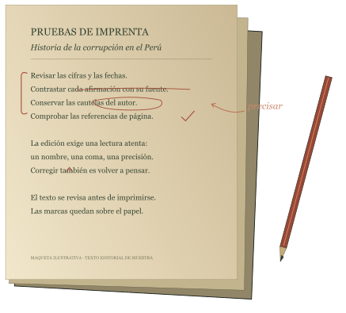
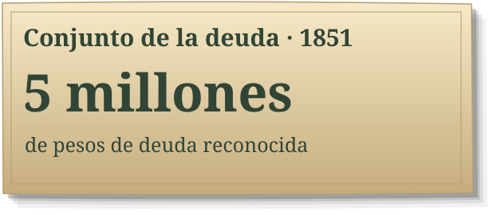
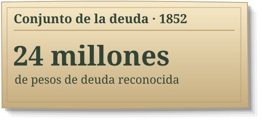
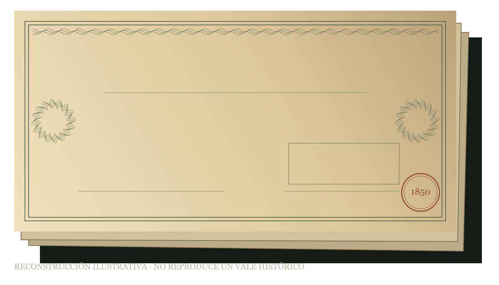
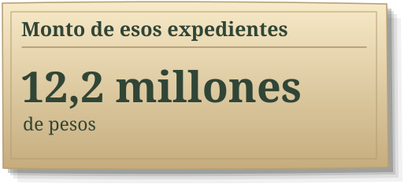
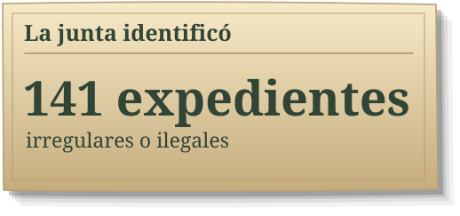
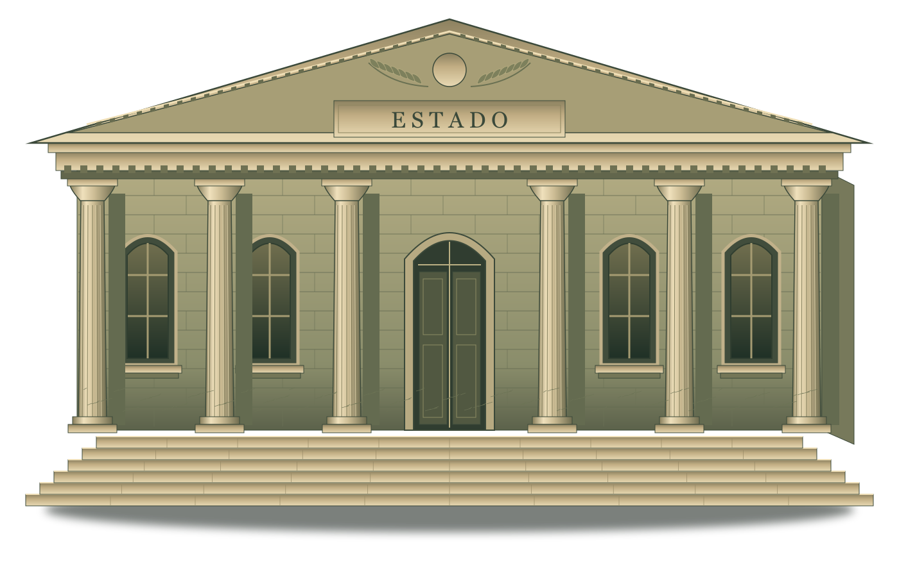
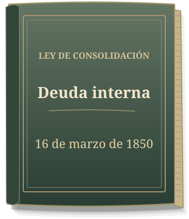

HISTORIA DE LA CORRUPCIÓN EN EL PERÚ · EPISODIO 0·2 · 2026-11-19
La deuda defraudada · Storyboard adaptado a la locución
1465 palabras de voz · 39 tramos · generado con storyboard.py
Cada tramo junta la voz nueva (con sus pausas en segundos; en rojo, los silencios sin música), la lámina del storyboard ilustrado que la acompaña, qué hay que cambiar, los encuadres con su cámara, efecto y pausa, y el sonido. Las escenas abren con su transición de entrada y salida. Propuesta del agente para revisión de Gerson. No se dibujó nada nuevo: los tramos nuevos indican qué piezas existentes reutilizar.
Igual 10 · Cambia 21 · Nuevo 7 · Se mueve 1
Nueva, antes de la escena larga 1
0El gancho
EntraAbre en negro con las pruebas de imprenta (gramática de la serie). Sin música: solo papel.
SaleCorte J: el mar de 1A entra 12 cuadros antes que su imagen, sobre la ficha de la tesis.
Sonido de la escenaun golpe grave cuando la pila crece; nada de música en la pregunta: solo el papel.
Nuevo0.1
La pila que crece
0.0En mil ochocientos cincuenta y uno, el Estado peruano reconocía que les debía unos cinco millones de pesos a sus propios ciudadanos. 0,8 s Un año después, la cuenta llegaba a veinticuatro millones: casi cinco veces la de un año antes. 1,2 s
Referencia: lámina 4A.1
NotaReutiliza el par de fichas 1851–1852 de 4A.1. El crecimiento es de altura, no de monedas.
Encuadres propuestos
Plano
Cámara y acción
Efecto y pausa
1
Las pruebas de imprenta
Cámara quieta sobre el libro corregido.
Papel con fibra y luz baja; nada se mueve hasta la voz.
2
1851 · unos 5 millones de pesos
Una pila baja de vales sin texto se asienta junto a la ficha de 1851.
Asentamiento de papel (impacto 0,025).
3
1852 · unos 24 millones de pesos
La pila sube casi cinco veces su altura; la ficha de 1852 reemplaza a la de 1851.
Golpe grave al terminar de crecer. Rojo de culpa en el borde de la pila nueva.
Piezas existentes que se reutilizan

pruebas-de-imprenta.svg

total-1851.svg

total-1852.svg

2c-vale-sin-texto.svg
Nuevo0.2
La junta marca la mitad; la ley la borra
0.1Años más tarde, una junta del propio Estado revisó esos papeles. Encontró más de doce millones en expedientes irregulares o ilegales: más de la mitad de toda esa deuda. 1,2 s
0.2Y en mil ochocientos cincuenta y siete, una ley volvió a dejar circular esos papeles. 1,5 s
NotaAdelanta en 10 s lo que 4E.1 y 4E.3 desarrollan: se usan las mismas cifras y rótulos para que el espectador los reconozca después.
Encuadres propuestos
Plano
Cámara y acción
Efecto y pausa
1
12,2 millones de pesos · 141 expedientes irregulares o ilegales
El corrector encierra en rojo algo más de la mitad de la pila.
Trazo rojo ligero; pausa de 1,2 s.
2
Ley del 11 de marzo de 1857
Cae el sello de la ley; la marca roja se borra a medias.
Sello desde arriba, sin deformar; la marca queda como fantasma.
Piezas existentes que se reutilizan

monto-observado.svg

expedientes-observados.svg
Nuevo0.3
La pregunta
0.3¿Cómo se infla la deuda de un país? 1 s Alfonso Quiroz estudió esta deuda en su primera investigación. Quería saber si la riqueza del guano se había derrochado en lujos, y encontró que la deuda se había inflado. 2 s
Tesis de 1980 · libro de 1987: La deuda defraudada
Entra la ficha a máquina sobre la pila.
Tecleo breve de la ficha; sostener 2 s.
Piezas existentes que se reutilizan
libro-de-quiroz.svg
Escena larga 1
1Las islas y el país
EntraDesde la ficha de la tesis, el mar entra antes que la imagen (corte J).
SaleEl folio de pestaña roja queda en la posición exacta con que abre 2A.
Sonido de la escenamar y aves; la pala y los sacos en la pausa sin voz; la música entra con «Con esa plata».
Cambia1A
De ubicar el país a reconocer el lugar de donde sale el guano.
1.0Perú, hacia mil ochocientos cincuenta. Han pasado casi treinta años desde la independencia y gobierna Ramón Castilla. 1 s
1.1Frente a Pisco están las islas de Chincha, cubiertas de guano: el excremento de las aves marinas, acumulado sobre la roca. 0,6 s En Gran Bretaña lo compran como abono para los campos. 1 s
Lámina 1A · storyboard ilustrado del 11 de noviembre
Qué cambiaLa ficha de Ramón Castilla entra aquí, con «gobierna Ramón Castilla». La definición del guano cae en la llegada a Chincha (encuadre 5). La voz ya nombra Gran Bretaña: el esquema comercial de 1C.1 llegará sin voz.
Encuadres de la lámina (sin cambios salvo lo que dice «Qué cambia»)
Plano
Cámara y acción
Efecto y pausa
1
El país
Dejar el punto de Pisco quieto para orientar.
Entra el mar antes de la voz.
2
Acercamiento a Pisco
Acercamiento pesado con Pisco como ancla.
Mostrar Chincha al oeste-noroeste.
3
Pisco en 2D
Igualar ancla al pasar de mapa a ciudad lateral.
Pausa con las fachadas y la costa a la vista.
4
Sobre el mar
La ciudad sale a la derecha y Chincha entra a la izquierda.
Desplazar dunas más lento. Mar con fase continua.
5
Llegada a Chincha
Asentar el encuadre en el grabado y sostenerlo.
Aves, espuma y destellos discretos en el agua.
Sonido y detalleBalanceo secundario mínimo; ambiente de mar y viento por asignar.
Motivo de cámaraAbrir sobre el paisaje y acercarse a las aves. El mapa llega después de reconocer el lugar. El esquema fiscal se reserva para 1D.
Enlace con lo que sigueEntrar al depósito desde los estratos y las aves del mismo grabado.
Igual1B.1
De ver el depósito a entender qué compraba el mercado.
1.2Sacarlo exige mucho trabajo. En las islas hay jornaleros libres, pero también presos, personas esclavizadas y trabajadores chinos sometidos a trabajo forzoso. 2 s · el cargamento sube al barco, sin voz
Lámina 1B.1 · storyboard ilustrado del 11 de noviembre
Qué cambia«Sacarlo exige mucho trabajo» entra con la pala. El encuadre 3 (uso agrícola) queda como plano sin voz.
Encuadres de la lámina (sin cambios salvo lo que dice «Qué cambia»)
Plano
Cámara y acción
Efecto y pausa
1
Cortar el depósito
Fijar cámara cuando la pala entra en el material.
Polvo escaso y sonido de raspado al contacto.
2
Llenar el saco
Seguir el arco de la pala hasta la boca abierta.
Granos con semilla. Caen una vez y se asientan.
3
El uso agrícola
Abrir a los surcos por la forma del saco apoyado.
Luz suave sobre el terreno. Dejar respirar el plano.
Sonido y detallePartículas escasas y con semilla; grava y saco como candidatos, pendientes de escucha.
Motivo de cámaraEl recorrido une depósito, herramienta y saco. La pala y los granos guían el ojo. El uso agrícola explica la demanda sin representar cantidades.
Enlace con lo que sigueVolver al saco lleno en las islas para seguir su carga.
Igual1B.2
De una carga apoyada al esfuerzo de llevarla.
Sin voz propia: corre bajo la frase anterior o en su pausa.
Lámina 1B.2 · storyboard ilustrado del 11 de noviembre
Qué cambiaLa segunda mitad de 1.2 (jornaleros, presos, personas esclavizadas, trabajadores chinos) cae sobre el agarre; sin rótulos sobre las figuras. El paso con carga ocupa la pausa de 2 s sin voz.
Encuadres de la lámina (sin cambios salvo lo que dice «Qué cambia»)
Plano
Cámara y acción
Efecto y pausa
1
Preparar el agarre
Bajar rodillas y acercar las manos con cámara fija.
Mantener el saco apoyado y la sombra bajo los pies.
2
Sujetar ambos lados
Cerrar los dos agarres antes de mover el saco.
Roce breve de tela. La carga conserva forma y volumen.
3
Contacto en los dos bordes
Acercar con las manos quietas sobre el saco.
Leer pulgares, costura y presión sobre la tela.
4
Cargar y dar el paso
Levantar con peso y dejar que la pierna tome apoyo.
El soporte queda en su sitio. Sombra pegada al pie.
Sonido y detalleSombra pegada a pies y apoyo; roce de saco ligado al gesto.
Motivo de cámaraLa carga conserva el mismo dibujo e identidad. Las manos rodean sus lados; no cruzan el torso. El soporte solo es una reconstrucción editorial.
Enlace con lo que sigueEntrar a la pasarela con el mismo saco. La voz sitúa las formas de trabajo.
Cambia1C.1
De seguir un cargamento a entender hacia dónde se vendía.
Sin voz propia: corre bajo la frase anterior o en su pausa.
Lámina 1C.1 · storyboard ilustrado del 11 de noviembre
Qué cambiaTodo el embarque va sin voz, en la pausa de 1.2. Si la pausa no alcanza, se alarga a 4 s: es el único respiro con acción física del episodio.
Encuadres de la lámina (sin cambios salvo lo que dice «Qué cambia»)
Plano
Cámara y acción
Efecto y pausa
1
Llegar a la pasarela
Seguir el saco hacia la borda. Estabilizar al pisar.
El mar sigue vivo detrás del casco.
2
Recibir en cubierta
Cámara fija durante la recepción. Mantener el agarre.
Heredar balanceo cuando el pie ya está a bordo.
3
Apoyar el saco
Detalle del saco asentado sobre el apoyo de cubierta.
Roce al contacto. La cuerda queda en segundo plano.
4
Abrir el esquema comercial
Abrir del barco a Chincha, producto y mercado.
Trazar la relación comercial y sostener el destino.
Sonido y detalleMar y balanceo secundarios; saco al contacto, sin repetir cargas ya concluidas.
Motivo de cámaraMantener el saco testigo al embarcar. La pasarela y el apoyo son esquemas editoriales, no una instalación histórica exacta. Después abrir la relación comercial.
Enlace con lo que sigueEl saco y el mercado conducen al libro de la casa consignataria.
Cambia1C.2
De la venta comercial a los recursos públicos.
1.3El guano pertenece al Estado, que encarga su venta a casas comerciales. Ellas lo venden, se quedan con una comisión y le adelantan dinero al gobierno. 1 s
Lámina 1C.2 · storyboard ilustrado del 11 de noviembre
Qué cambiaSe suma una partida o flecha nueva: «Adelantos al gobierno» (Q, pp. 166–167). Las otras tres partidas no cambian.
Encuadres de la lámina (sin cambios salvo lo que dice «Qué cambia»)
Plano
Cámara y acción
Efecto y pausa
1
Registrar la venta
Abrir el libro con peso y detener la cámara.
Sombra en el lomo. Luz sobre la venta.
2
Separar gastos y comisión
Conservar página y venta. Revelar descuentos por turno.
Apagar la venta al trasladar el foco. Roce de hoja.
3
Identificar el ingreso del Estado
Revelar la partida completa al llegar a la consecuencia.
Sostener el ingreso antes del paneo al Estado.
Sonido y detalleSombra en el lomo y curvatura discreta; hoja y pluma como candidatos.
Motivo de cámaraConservar libro, encuadre y posición de las partidas. Añadir un concepto por vez. El foco pasa de la venta a los descuentos y al ingreso.
Enlace con lo que sigueSeguir el ingreso del Estado al edificio y las obligaciones pendientes.
Cambia1D.1
De las entradas del Estado a las personas que esperaban cobrar.
1.4Con esa plata, el Estado puede por fin atender algo que arrastraba desde la guerra de independencia, y a veces desde la colonia: sus deudas. 2 s
2.0Esas deudas tenían orígenes distintos. Un comerciante, por ejemplo, le había prestado dinero al gobierno en un apuro. Un hacendado reclamaba el ganado y las cosechas que se habían llevado para mantener a las tropas. 0,8 s A lo que el Estado les debía a sus propios ciudadanos se le llamaba deuda interna. 1,2 s
Lámina 1D.1 · storyboard ilustrado del 11 de noviembre
Qué cambiaSale el encuadre 1 tal como está: las tres fuentes de ingreso (tributo, aduanas, guano) ya no tienen voz. Queda solo el guano llegando al Estado con «Con esa plata». Los ejemplos del préstamo y los bienes (encuadres 2 y 3) reciben la voz de 2.0, y «deuda interna» se rotula en el encuadre 4.
Encuadres de la lámina (sin cambios salvo lo que dice «Qué cambia»)
Plano
Cámara y acción
Efecto y pausa
1
Los ingresos del Estado
El Estado ancla el encuadre. Revelar las tres fuentes.
Un solo recorrido iluminado por vez.
2
Un préstamo
Abrir el primer ejemplo en la mesa del comerciante.
Foco sobre el papel del préstamo. Monedas como utilería.
3
Bienes para sostener tropas
Presentar el segundo ejemplo en su propio encuadre.
Pasar de los bienes al reclamo. Sostener la lectura.
4
De las obligaciones al expediente
Reunir las hojas y seguir la pestaña roja.
Sombra entre folios. Roce al separar el expediente.
Sonido y detalleProfundidad de papeles; sonido de hoja al abrir cada ejemplo, no monedas numeradas.
Motivo de cámaraEl contexto fiscal llega después de conocer la venta del guano. Los dos ejemplos dan contenido a la deuda. La cámara sigue el papel hacia la carpeta.
Enlace con lo que sigueApartar los ejemplos y seguir el folio del préstamo.
Igual1D.2
De una carpeta entre muchas al reclamo que vamos a seguir.
Sin voz propia: corre bajo la frase anterior o en su pausa.
Lámina 1D.2 · storyboard ilustrado del 11 de noviembre
Qué cambiaPausa de 1,2 s tras «deuda interna»; el folio por revisar se sostiene.
Encuadres de la lámina (sin cambios salvo lo que dice «Qué cambia»)
Plano
Cámara y acción
Efecto y pausa
1
Abrir la carpeta
Acercarse al folio de pestaña roja.
Separar sombra de tapa y papel.
2
Extraer el folio
La mano conserva el agarre al deslizarlo.
Roce de papel y asentamiento breve.
3
Reclamo por revisar
Encuadre fijo. Nombre del trámite y campos completos.
Sostener Por revisar. El ambiente del despacho entra antes del enlace.
Sonido y detalleSombras según separación de hojas; carpeta y hoja como candidatos.
Motivo de cámaraAcercarse al documento, no al centro de la carpeta. Mantener todos sus campos legibles. Reencuadrar hacia el mismo papel en la escena siguiente.
Enlace con lo que sigueMantener este folio y su posición como entrada a 2A.
Hoja de contacto de diseno/recursos-escena01Escena larga 2
2Un reclamo pasa por varias manos
EntraMismo folio, misma posición (corte invisible).
SaleSe cierra la carpeta genérica y se abre la de Novoa: el corte lo marca el cambio de carpeta, no un fundido.
Sonido de la escenala pluma en «revisar cada reclamo»; un tic por cada mano del circuito en la frase del «Entonces»; la música sostiene la pausa final.
Cambia2A
De una solicitud particular a la regla que organiza el reconocimiento.
2.1En mil ochocientos cincuenta, durante el gobierno de Castilla, se dio una ley para ordenarla: revisar cada reclamo, decidir cuánto valía y empezar a pagarlo. A esa operación se le llamó consolidación. 1 s
Lámina 2A · storyboard ilustrado del 11 de noviembre
Qué cambiaLa ley entra con su fecha (16 de marzo de 1850). Con «consolidación», la palabra se escribe en la pizarra y se queda hasta 2F.
Encuadres de la lámina (sin cambios salvo lo que dice «Qué cambia»)
Plano
Cámara y acción
Efecto y pausa
1
El mismo folio
Retomar la posición exacta del cierre anterior.
Dar tiempo a la pestaña y al estado Por revisar.
2
Volver a las obligaciones
Abrir el encuadre hacia los dos ejemplos ya vistos.
Iluminar préstamo y bienes por turnos.
3
La ley de 1850
Entrar la ley junto al mismo papel.
Pausa para leer la fecha y el propósito en la voz.
Sonido y detalleUn cambio de foco por concepto; hoja al cambiar el documento.
Motivo de cámaraEl folio continúa con su pestaña roja. El recuerdo utiliza los ejemplos ya vistos; la ley explica el propósito antes del procedimiento.
Enlace con lo que sigueVolver al folio para contrastar los campos.
Cambia2B
De lo pedido a lo reconocido tras revisar los respaldos.
Sin voz propia: corre bajo la frase anterior o en su pausa.
Lámina 2B · storyboard ilustrado del 11 de noviembre
Qué cambiaEl cotejo ilustra «revisar cada reclamo, decidir cuánto valía» de 2.1. La voz es corta: dejar los encuadres 1 y 4 o recorrer los cuatro sin detenerse.
Encuadres de la lámina (sin cambios salvo lo que dice «Qué cambia»)
Plano
Cámara y acción
Efecto y pausa
1
Origen del reclamo
Cenital fijo. Unir el origen con su respaldo.
Foco cálido en la relación. El resto baja.
2
Quién es el acreedor
Mover la lupa al nombre del acreedor.
Desplazar luz y línea al segundo soporte.
3
Qué monto se sustenta
Pasar al campo del monto y sus comprobantes.
Pausa en la comparación, con cámara quieta.
4
El reclamo queda reconocido
Revelar el cambio de estado después del cotejo.
Asentar el folio. Mantener legible el resultado.
Sonido y detalleHalo localizado de intensidad baja; lápiz o pluma al señalar, sin sello oficial inventado.
Motivo de cámaraEl foco une campo y documento por turnos. Es un modelo del procedimiento previsto, no un formulario auténtico ni la afirmación de que siempre se revisó así.
Enlace con lo que sigueConservar la pestaña roja al presentar el título separado.
Nuevo2B+
El crédito público
2.2La idea era buena, y Quiroz lo reconoce: un Estado que paga lo que debe recupera la confianza de quienes podrían prestarle. Para él, la consolidación fue un fundamento del crédito público moderno en el Perú. 1,2 s
NotaReutiliza la ficha de 5A.1 para que el cierre la reconozca.
Encuadres propuestos
Plano
Cámara y acción
Efecto y pausa
1
Un Estado que paga lo que debe
El edificio del Estado a la izquierda; el folio reconocido a su lado.
Luz cálida que vuelve al edificio.
2
Fundamento del crédito público moderno
Entra la ficha de la finalidad del crédito, la misma de 5A.1.
Sostener 1,2 s. La ficha reaparece en 5A.1 como regreso.
Piezas existentes que se reutilizan

1d-edificio-estado.svgfinalidad-del-credito.svg
Cambia2C
Del reclamo comprobado al derecho de cobro documentado.
2.3Cuando un reclamo se aprobaba, el acreedor recibía un vale: un papel en el que el Estado se comprometía a pagarle esa suma, con intereses. 0,6 s No era plata en la mano, sino una promesa de pago, y esa promesa se podía vender. 1,2 s
Lámina 2C · storyboard ilustrado del 11 de noviembre
Qué cambiaEl vale lleva «6 % de interés» [VERIFICAR si es anual]. El encuadre 3 recibe «y esa promesa se podía vender»: se queda el vale, pierden foco las monedas.
Encuadres de la lámina (sin cambios salvo lo que dice «Qué cambia»)
Plano
Cámara y acción
Efecto y pausa
1
Primero se reconoce la deuda
Sostener el folio reconocido.
Retomar el libro de la ley como referencia.
2
Aparece el vale
Desplazar el título hacia el lado del acreedor.
Sombra al asentarse. Marco doble legible.
3
El cobro queda pendiente
Mantener juntos el folio y el vale.
Foco en derecho de cobro y pausa de lectura.
Sonido y detalleRelieve y asentamiento de papel con peso natural; hoja al recibir título.
Motivo de cámaraPrimero definir el vale y el derecho de cobro. Después distinguir recepción del título y efectivo. Mantener la pestaña del reclamo y el marco doble del vale.
Enlace con lo que sigueVolver al momento anterior al reconocimiento para ver la compra.
Nuevo2C+
Los dos huecos de la ley
2.4Pero la ley tenía dos huecos, según Quiroz. No tenía reglas claras para los reclamos mal sustentados, ni para vender o traspasar un vale. 1 s
Referencia: lámina 2A
NotaAntes la falta de reglas era una cautela al final (§3 del guion por ideas); ahora es la causa del negocio y va antes de la compra.
Encuadres propuestos
Plano
Cámara y acción
Efecto y pausa
1
El libro de la ley, abierto
Cenital fijo sobre el libro de 2A.
Luz de lectura sobre dos renglones.
2
Reclamos mal sustentados · traspaso de vales
El corrector encierra en rojo los dos renglones, uno por vez, con la voz.
Trazo del corrector; pausa de 1 s.
Piezas existentes que se reutilizan

libro-ley-consolidacion.svg
Igual2D
De una solicitud en manos del reclamante a un papel comprado por otro.
2.5Por esos huecos entró el negocio. Antes de mil ochocientos cincuenta, muchos reclamos viejos casi no valían nada. Los especuladores los compraban muy barato y luego negociaban que el Estado los reconociera por un valor muchas veces mayor. 1 s
Lámina 2D · storyboard ilustrado del 11 de noviembre
Qué cambiaSiete encuadres para unos 12 s de voz. Si el gesto se corta, dejar 1, 3, 5 y 6. Rótulos de tiza: «Precio de compra» bajo, «Valor reconocido» alto.
Encuadres de la lámina (sin cambios salvo lo que dice «Qué cambia»)
Plano
Cámara y acción
Efecto y pausa
1
Presentar a ambos de cuerpo entero
El folio a la izquierda y el sobre a la derecha.
Luz de ventana sobre la madera y las figuras.
2
Acercarse con el gesto
Empujar la cámara mientras levantan los brazos.
La mesa avanza por delante de los muebles.
3
Reencuadrar la mesa
Cerrar el plano con el zoom de la misma toma.
Conservar la longitud del brazo al flexionar el codo.
4
La palma se acerca al borde
Pasar al cenital conservando los lados.
El foco sigue el papel hacia la mano.
5
El agarre compartido
Ambos pulgares quedan sobre el folio.
Sostener el contacto antes de la retirada.
6
El papel llega al comprador
La reclamante suelta y retira el brazo.
El sobre arranca en sentido contrario.
7
El pago llega a la reclamante
La mano entra en diagonal para recibir el sobre.
El rastro se desvanece al frenarse el pago.
Sonido y detallePapel y sobre ligeros, con trayectorias separadas; hoja o carta como candidatos.
Motivo de cámaraEl reclamo va a la derecha y el pago a la izquierda. La mano que entrega suelta después del agarre receptor; el sobre representa pago sin importe.
Enlace con lo que sigueSeguir al comprador hacia la gestión del reconocimiento.
Cambia2E
De una gestión que puede ser legítima a una decisión favorecida.
2.6Para lograrlo había ayuda. Algunos capitalistas movían los expedientes a cambio de comisiones, y algunos funcionarios prometían un reconocimiento privilegiado a cambio de participaciones y comisiones ilegales. 1 s
2.7Quiroz no condena cualquier gestión: en el caso que vamos a ver, la comisión del intermediario era legítima. Lo que llama ilegal son las participaciones y comisiones que se pagaban a cambio de un reconocimiento privilegiado. 1 s
Lámina 2E · storyboard ilustrado del 11 de noviembre
Qué cambiaEl trazo rojo (encuadre 2) cae con «comisiones ilegales». Con 2.7, la ficha del intermediario se ilumina en neutro: su comisión era legítima. La nota de la comisión de Novoa (2F, encuadre 3) se adelanta aquí como anuncio.
Encuadres de la lámina (sin cambios salvo lo que dice «Qué cambia»)
Plano
Cámara y acción
Efecto y pausa
1
Presentar las tres funciones
Comprador, intermediario y funcionario conservan su lugar.
Iluminar cada función cuando se la nombra.
2
La comprobación queda pendiente
Mostrar la revisión que se elude en el ejemplo.
El trazo rojo se dibuja por fuera del cotejo.
3
El trámite recibe trato favorecido
Mantener visible el sustento pendiente.
El foco pasa al resultado, con cámara quieta.
4
Precio y valor reconocido
Comparar sobre y vale en el mismo encuadre.
Dos focos de igual intensidad y tiempo de lectura.
Sonido y detalleTrazo rojo reservado al paso indebido; luz neutra en rostros; un solo foco activo.
Motivo de cámaraLos tres participantes conservan ropa, posición y rótulo. La ilustración del abuso destaca el paso de sustento por comprobar a reconocimiento favorecido.
Enlace con lo que sigueReunir lo aprendido antes de abrir un expediente distinto.
Cambia2F
Del ejemplo del trámite a la investigación de un caso histórico.
2.8Entonces, un reclamo podía pasar por cuatro manos: alguien vende barato, otro compra, un tercero mueve el expediente y un funcionario lo aprueba. 2,5 s
Lámina 2F · storyboard ilustrado del 11 de noviembre
Qué cambiaEl encuadre 1 recorre las cuatro manos (vende, compra, mueve, aprueba) con un tic por mano. Cámara quieta 2,5 s con el circuito completo. Los encuadres 2 y 3 abren la carpeta de Novoa con la voz de 3.0.
Encuadres de la lámina (sin cambios salvo lo que dice «Qué cambia»)
Plano
Cámara y acción
Efecto y pausa
1
Reunir el recorrido
Abrir para ver reclamo, compra y reconocimiento.
Recorrer los tres objetos con un foco por vez.
2
Guardar el ejemplo
Cerrar y desplazar la carpeta genérica.
Sombra de la tapa y pausa breve al cerrarla.
3
Otro expediente
Abrir la carpeta de Ignacia Novoa.
Separar el acuerdo legítimo de comisión con Elías.
Sonido y detalleCarpeta y hoja para el cambio de expediente; el ambiente puede anticipar la mesa siguiente.
Motivo de cámaraEl ejemplo genérico se cierra antes de entrar a Novoa. La nota de su gestión por comisión se identifica como acuerdo legítimo según Quiroz.
Enlace con lo que sigueConservar la nueva carpeta y la identificación de Novoa al entrar a 3A.
Hoja de contacto de diseno/recursos-escena02Escena larga 3
3El expediente de Novoa
EntraEl mismo encuadre con que termina 2F.
SaleSe cierra la carpeta de Novoa y se abre la caja del conjunto con 1851: corte por cambio de escala, con hoja.
Sonido de la escenala música baja desde «fuera de plazo»; el silencio de 2 s después de la cifra (CLAUDE §6) es absoluto, y la música vuelve, baja, con «Según Quiroz».
Cambia3A
La solicitud y su alcance.
3.0Un expediente muestra, con nombres y cifras, la parte del camino que pasa por el intermediario y el funcionario. 0,6 s Ignacia Novoa de Arredondo reclamaba el valor de una hacienda expropiada. Entre sus bienes contaba a quinientas personas esclavizadas, y además pedía lo que la hacienda habría dejado de ganar durante treinta y dos años. 1 s En el Perú de entonces, la esclavitud todavía era legal: se abolió en mil ochocientos cincuenta y cuatro. 1,5 s
Lámina 3A · storyboard ilustrado del 11 de noviembre
Qué cambiaSe agrega una ficha pequeña: «Abolición · decreto de Huancayo · 3 de diciembre de 1854», con «se abolió». Pieza nueva por dibujar. La música sale con «personas esclavizadas», como ya estaba.
Encuadres de la lámina (sin cambios salvo lo que dice «Qué cambia»)
Plano
Cámara y acción
Efecto y pausa
1
El mismo expediente
Retomar el encuadre exacto con que termina 2F.
Dar tiempo al nombre y la comisión antes del corte.
2
La hacienda expropiada
Acercarse al folio y descubrir el grabado editorial.
Asentar el papel y concentrar luz en la hacienda.
3
La solicitud incluía a 500 personas esclavizadas
Volver al renglón con cámara quieta.
Retirar la música. Sostener la lectura.
4
Treinta y dos años reclamados
Abrir espacio bajo el grabado para la extensión.
Dibujar la llave. Mantener la expresión «reclamadas».
Sonido y detalleHoja con asentamiento leve; retirar música durante la referencia a personas esclavizadas.
Motivo de cámaraEl resumen distingue cada parte del reclamo. Se describe su solicitud; la ilustración no valida ese criterio de compensación.
Enlace con lo que sigueSeguir el mismo folio hacia la gestión de Elías.
Cambia3B
De la solicitud al intento de conseguir aprobación.
3.1Su intermediario era Domingo Elías, uno de los capitalistas más importantes del país, que gestionaba el reclamo a cambio de una comisión. En mil ochocientos cincuenta y dos intentó que el gobierno lo aprobara por entre quinientos y seiscientos mil pesos, y para sí esperaba doscientos mil. 1 s
Lámina 3B · storyboard ilustrado del 11 de noviembre
Qué cambiaRótulo nuevo: «Elías pide: de 500 000 a 600 000 pesos», y debajo, más chico, «Su comisión esperada: 200 000 pesos».
Encuadres de la lámina (sin cambios salvo lo que dice «Qué cambia»)
Plano
Cámara y acción
Efecto y pausa
1
Domingo Elías, intermediario
Situarlo a la derecha con el expediente a su alcance.
Ventana tenue. Sostener nombre y función.
2
Elías prepara el gesto
Mantener cabeza y torso en el mismo lugar.
Flexionar hombro y codo con longitud fija.
3
El intervalo que buscaba
El gesto termina hacia el expediente.
Roce de hoja al entrar el intervalo completo.
Sonido y detalleSombra del papel estable; sonido de hoja al descubrir el objetivo, sin monedas.
Motivo de cámaraLa ropa y los rótulos mantienen la identidad entre estados. La comisión de esta gestión no se ilustra como soborno demostrado.
Enlace con lo que sigueConservar el lado de Elías al llegar la respuesta.
Igual3C
Echenique comunica que el reclamo estaba fuera de plazo.
3.2El presidente ya era José Rufino Echenique, que había sucedido a Castilla. Echenique le respondió que el reclamo estaba fuera de plazo. 1,5 s
Lámina 3C · storyboard ilustrado del 11 de noviembre
Qué cambiaSin cambios: identificar a Echenique, «Fuera de plazo», sostener 2 s.
Encuadres de la lámina (sin cambios salvo lo que dice «Qué cambia»)
Plano
Cámara y acción
Efecto y pausa
1
Continuidad con la gestión
Retomar el mismo plano medio al terminar el gesto.
Mantener la luz lateral.
2
Llega la respuesta
Conservar el folio a la izquierda y la mano a la derecha.
Identificar a Echenique antes de revelar el resultado.
3
Fuera de plazo
La mano pasa de agarre a apoyo y la tapa se asienta.
Tras la quietud, iluminar y subrayar «Fuera de plazo».
4
El antecedente queda visible
La mano se retira. El expediente queda quieto.
Sostener dos segundos y bajar el foco antes de 3D.
Sonido y detalleTrazo rojo discreto o detención del conector; hoja, sin mazo judicial ni golpe de sello auténtico.
Motivo de cámaraEchenique comunica que el reclamo no cumplía el plazo. La nota es un resumen editorial, sin diálogo o resolución reproducidos.
Enlace con lo que sigueMantener la respuesta al presentar a Torrico.
Cambia3D
Del antecedente a la intervención y al monto aprobado.
3.3Días después, el reclamo se aprobó. 0,8 s Por novecientos cuarenta y ocho mil quinientos pesos en vales. 2 s Era mucho más de lo que había pedido el propio Elías: entre una vez y media y casi el doble. 1 s
Lámina 3D · storyboard ilustrado del 11 de noviembre
Qué cambiaCambia el orden: primero el encuadre 2 (unos días después, quietud), después el 3 (948 500 pesos en vales, con 2 s de silencio absoluto) y al final el 1 (Torrico), con «Según Quiroz». El rótulo pasa de «948.500» a «948 500». Tras el silencio entra la comparación: «Elías pidió de 500 000 a 600 000».
Encuadres de la lámina (sin cambios salvo lo que dice «Qué cambia»)
Plano
Cámara y acción
Efecto y pausa
1
Entra la ficha de Torrico
Mantener el antecedente y presentar al ministro.
Deslizar la ficha con roce y sombra de contacto.
2
Unos días después
Dejar el expediente quieto al salir la ficha de Torrico.
Dar un pulso de silencio para marcar el paso de días.
3
948.500 pesos en vales
Sostener el encuadre al entrar la ficha de aprobación.
Revelar cifra y unidad juntas. Pausa de 2 s.
Sonido y detalleEntrada solemne; halo breve y asentamiento del papel. Propuesta de silencio de dos segundos tras la lectura.
Motivo de cámaraEl resultado aparece después de la intervención atribuida a Torrico. No representar una orden o firma que no tenemos.
Enlace con lo que sigueConservar la cifra y recuperar el vale de la escena 2.
Igual3E
Distinguir la aprobación de lo que Novoa habría recibido.
3.4Según Quiroz, se aprobó gracias a la participación directa del ministro de Guerra, Juan Crisóstomo Torrico. 1 s Y Novoa, según Quiroz, probablemente recibió alrededor de ciento ochenta mil pesos, también en vales. 2 s
Lámina 3E · storyboard ilustrado del 11 de noviembre
Qué cambiaLa ficha de Torrico queda arriba; las dos cifras se comparan como estaban. «180.000» pasa a «180 000».
Encuadres de la lámina (sin cambios salvo lo que dice «Qué cambia»)
Plano
Cámara y acción
Efecto y pausa
1
Recuperar el significado del vale
Mantener el monto aprobado al lado del vale conocido.
Dar un foco leve al derecho de cobro.
2
La estimación de Quiroz
La segunda ficha entra a la derecha en bloque.
«Probablemente» y «en vales» entran con 180.000.
3
Leer ambas fichas juntas
Cámara fija. Sostener ambas cifras y sus unidades.
Igualar luz. Dejar el vale como referencia común.
Sonido y detalleLuz pasa de una ficha a otra; al comparar, ambas pueden compartir foco. Sin efectos de caja o monedas.
Motivo de cámaraLas cifras entran por separado. Probablemente acompaña el monto desde su primera aparición.
Enlace con lo que sigueVolver a las personas y pasar del caso al conjunto.
Cambia3F
Cambiar de escala sin arrastrar el expediente particular.
3.5No sabemos adónde fue cada peso de la diferencia. Lo que sí documenta Quiroz es quién lo dio por vencido, quién intervino después y cuánto se terminó aprobando. 2 s
Lámina 3F · storyboard ilustrado del 11 de noviembre
Qué cambiaEl encuadre 1 lee las funciones con la voz (quién lo dio por vencido, quién intervino, cuánto se aprobó). El encuadre 2 (volver a Elías) queda sin voz o sale: Elías vuelve en 4C.
Encuadres de la lámina (sin cambios salvo lo que dice «Qué cambia»)
Plano
Cámara y acción
Efecto y pausa
1
Recuperar las funciones
Volver a la carpeta de Novoa y leer las funciones por turno.
Un foco discreto por renglón.
2
Volver a Elías
Abrir al archivo y recuperar a Elías como enlace.
Cerrar la carpeta y retirarla antes del dato general.
3
Conjunto de la deuda en 1851
Abrir con la carpeta general y un encuadre estable.
Presentar cinco millones y conservar el plano para 4A.1.
Sonido y detalleFoco en la ficha, no halo moral sobre el rostro. Hoja para el paso a la escala general.
Motivo de cámaraLa flecha cambia de escala, no sigue un pago individual. Elías conserva su función anterior al aparecer como denunciante.
Enlace con lo que sigueReutilizar este plano en 4A.1.
Hoja de contacto de diseno/recursos-escena03Escena larga 4
4Lo investigan y los títulos siguen circulando
EntraLa caja del conjunto con 1851, igual que al final de 3F.
SaleLos informes de la junta quedan en el encuadre exacto con que abre 5A.1.
Sonido de la escenadespués de la palabra del episodio, solo papel; el viaje a Londres con un tic por tramo; la música en tensión desde «Los que tenían los vales» y se apaga en el «Entonces».
Cambia4A.1
Del expediente al conjunto de la deuda.
4.0Novoa fue un caso entre muchos. Según Quiroz, los expedientes más dudosos pasaron antes de que vencieran los plazos de junio y octubre de mil ochocientos cincuenta y dos. 1 s Así la deuda pasó de cinco a veinticuatro millones de pesos. Esos millones eran deuda reconocida en vales, que el Estado tendría que pagar después. Y no toda la diferencia fue fraude: para saberlo, hay que abrir los expedientes uno por uno. 1,5 s
Lámina 4A.1 · storyboard ilustrado del 11 de noviembre
Qué cambiaSe agrega una línea de tiempo de 1852 con dos marcas, junio y octubre, y los expedientes que se apilan antes de cada una. Las fichas dicen «millones de pesos». El encuadre 3 (vale genérico) pasa al tramo siguiente.
Encuadres de la lámina (sin cambios salvo lo que dice «Qué cambia»)
Plano
Cámara y acción
Efecto y pausa
1
Retomar el archivo de 1851
Conservar el último cuadro de la escena 3.
Sostener 1851 y cinco millones antes de comparar.
2
La deuda reconocida en 1852
Abrir el espacio de lectura y asentar la segunda ficha.
Leer ambos años con sus montos y la fuente.
3
Un vale genérico
Retirar las fichas y recuperar el marco doble.
Acercar la cámara al título para pasar a la mesa.
Sonido y detalleEntrada solemne por datos, sin escalas monetarias inventadas. Hoja discreta.
Motivo de cámaraDistinguir deuda reconocida, efectivo y monto robado. La nueva pieza no representa un vale individual del expediente de Novoa.
Enlace con lo que sigueSeguir un vale genérico entre tenedores.
Nuevo4A+
Los consolidados
4.1Los vales terminaron concentrados en pocas manos. Según Quiroz, la red que se benefició reunía a varias docenas de personas, y en la época les dieron nombres. 1 s Les decían los consolidados. 2,5 s La palabra que nombraba una forma de pagar las deudas del Estado terminó nombrando a quienes se vinculaba con el robo político. 2 s
Referencia: lámina 5A.1
los consolidadosQ, p. 174
Encuadres propuestos
Plano
Cámara y acción
Efecto y pausa
1
En pocas manos
Los vales se juntan hacia unas pocas fichas de grupo (la pieza de 5A.1).
Movimiento pesado; un solo foco.
2
los consolidados
Palabra del episodio a pantalla completa, quieta. Debajo, «Q, p. 174».
2,5 s sin voz y sin música: solo papel. Es la palabra clave de la serie (CLAUDE §1.3).
3
La palabra cambia de sentido
La palabra baja a una esquina y queda como rótulo de la escena.
La música vuelve, baja.
Piezas existentes que se reutilizan
beneficios-concentrados.svg
Cambia4B
Parte de los vales se convierte antes de 1855.
4.2Muchos de esos vales se cambiaron por deuda externa, la que el Estado tenía con acreedores de fuera del país. En Londres, Manuel de Mendiburu cambió así cerca de la mitad de toda la deuda consolidada. 0,8 s En el mercado, un vale se vendía por alrededor del cuarenta por ciento de lo que decía; el bono que lo reemplazaba valía casi lo que decía. 1 s Quiroz llama a esa conversión un lavado: el papel manchado por su origen salía limpio. 2 s
Lámina 4B · storyboard ilustrado del 11 de noviembreReferencia: lámina 1C.1
Qué cambiaSe amplía a cuatro encuadres. (1) El vale viaja a Londres por el mismo mapa del esquema comercial de 1C.1 (recorrido con tic por tramo); ficha «Manuel de Mendiburu · Londres» [VERIFICAR]; rótulo «Convertido: cerca del 46 % de la deuda consolidada». (2) Vale y bono lado a lado: «Precio en plaza: ≈ 40 % de lo que dice» frente a «Precio: casi el 100 %», un porcentaje por vez. (3) El vale lleva una mancha roja; el bono sale limpio: es la yuxtaposición del episodio («lavado»). Los intereses (6 % y 4,5 %) no se rotulan.
Encuadres de la lámina (sin cambios salvo lo que dice «Qué cambia»)
Plano
Cámara y acción
Efecto y pausa
1
Vale de deuda interna
Mantener el título visible en el lado izquierdo.
Pausar sobre el derecho de cobro.
2
Canje de parte de los vales
Dibujar el trazo hacia el espacio libre.
Revelar «Canje parcial» con el conector.
3
Bono de deuda externa
Hacer entrar el bono y conservar el vale.
Asentar la hoja y dejar leer ambos rótulos.
Sonido y detalleTrazo único con peso natural, sin girar o destruir los títulos; hoja al revelar el nuevo instrumento.
Motivo de cámaraLa conversión sucede antes de la investigación de 1855. No convertir toda la deuda ni todos los contratos en una sola fecha.
Enlace con lo que sigueVolver a Elías y a sus cartas de 1853.
Igual4C
La denuncia se lee junto a su participación en el negocio.
4.3En agosto de mil ochocientos cincuenta y tres, Domingo Elías publicó dos cartas en El Comercio contra la consolidación. Ya estaba peleado con Echenique y con Torrico por el caso Novoa. Según Quiroz, sostuvo que no beneficiaba a los reclamantes originales, sino a los agiotistas, los que especulaban con esos papeles. 1 s Lo encarcelaron, y al salir se levantó contra Echenique. 1 s
4.4Elías no denunciaba desde afuera. Él mismo había movido expedientes por comisión, así que su denuncia trae información y también defiende sus intereses. Quiroz lo resume así: defendió reformas contra la corrupción, pero no dejó de beneficiarse de compensaciones oficiales. 1,5 s
Lámina 4C · storyboard ilustrado del 11 de noviembre
Qué cambiaCartas del 12 y 16 de agosto de 1853. Con 4.4, el rótulo de doble función de Elías (pieza existente).
Encuadres de la lámina (sin cambios salvo lo que dice «Qué cambia»)
Plano
Cámara y acción
Efecto y pausa
1
Volver a Domingo Elías
Conservar escala, ropa y posición de la escena 3.
Dar tiempo a la función antes de las fechas.
2
La carta del 12 de agosto
Cortar a la mesa cuando se nombre El Comercio.
Roce de hoja y foco de lectura.
3
La carta del 16 de agosto
Entrar la segunda carta y sostener las dos.
Retomar su doble papel en la voz.
Sonido y detallePapel y pluma, con luz de lectura neutra; sin música de consagración heroica.
Motivo de cámaraEl regreso es explícito. Las cartas dibujadas son resúmenes; no un manuscrito ni una cita auténtica.
Enlace con lo que siguePasar del conflicto al cambio de gobierno.
Igual4D
Examinar los documentos que llevaron a la emisión.
4.5En mil ochocientos cincuenta y cinco, Echenique cayó y Castilla volvió al poder. Una junta fiscal revisó los expedientes de la consolidación. Encontró más de doce millones de pesos en ciento cuarenta y un expedientes irregulares o ilegales. Otros cuatro expedientes habían sido robados. 1,5 s
Lámina 4D · storyboard ilustrado del 11 de noviembre
Qué cambiaCambio de gobierno con la ficha política (1855) y la junta que abre el archivo. La primera mitad de 4.5.
Encuadres de la lámina (sin cambios salvo lo que dice «Qué cambia»)
Plano
Cámara y acción
Efecto y pausa
1
Cambia el gobierno
Mantener el edificio y el vale como anclas.
Mover la ficha política y sostener 1855.
2
La junta abre el archivo
Acercar de los estantes al cajón y su ficha.
Sonido corto de madera y legajo.
3
Antecedentes, aprobación y emisión
Cenital fijo sobre los tres papeles.
Mover un foco de izquierda a derecha.
Sonido y detalleCarpeta y hojas con peso; foco por documento, sin un hallazgo espectacular inventado.
Motivo de cámaraEl Estado permanece como ancla. La investigación no se atribuye por defecto al expediente de Novoa.
Enlace con lo que siguePasar de las etapas a lo que encontró la junta.
Igual4E.1
Distinguir expedientes observados, monto y expedientes robados.
Sin voz propia: corre bajo la frase anterior o en su pausa.
Lámina 4E.1 · storyboard ilustrado del 11 de noviembre
Qué cambiaLa segunda mitad de 4.5: 141 expedientes, más de doce millones, cuatro robados. Rótulos con unidad y «irregulares o ilegales».
Encuadres de la lámina (sin cambios salvo lo que dice «Qué cambia»)
Plano
Cámara y acción
Efecto y pausa
1
141 expedientes irregulares o ilegales
Revelar el recuento con su calificación.
Cámara quieta y pausa de lectura.
2
12,2 millones de pesos vinculados
Asentar el monto al lado de los expedientes.
Conservar la nota de Quiroz.
3
Cuatro expedientes robados
Bajar el foco a los cuatro espacios vacíos.
Dejar este recuento separado del monto.
Sonido y detalleCifras completas, halo limitado a cada bloque; hoja al cambiar al registro aparte.
Motivo de cámaraLa calificación permanece con el recuento. Los cuatro robados son expedientes; no otra suma de dinero.
Enlace con lo que siguePasar a las medidas sobre el servicio y el canje.
Cambia4E.2
Seguir las medidas, los argumentos y las presiones.
4.6Una ley de diciembre de mil ochocientos cincuenta y seis suspendió el pago de los vales fraudulentos. Hubo juicios, pero muchas de esas personas ya habían huido del país, entre ellas Torrico, Echenique y Mendiburu. 1 s
4.7Los que tenían los vales protestaron: decían que un vale era como un billete, y que quien lo había comprado no tenía por qué perder. Los diplomáticos de Gran Bretaña y de Francia los respaldaron, y barcos ingleses y franceses rondaban las islas del guano. En el país, además, el general Vivanco se había alzado en armas. 1,5 s
Lámina 4E.2 · storyboard ilustrado del 11 de noviembreReferencia: lámina 5A.1
Qué cambiaEncuadre 1: «Ley del 29 de diciembre de 1856 · suspensión». Nuevo, después: las fichas de Torrico, Echenique y Mendiburu salen del cuadro hacia el borde («habían huido»). Encuadre 3 (presiones): además de las flechas, vuelven las islas de 5A.1 con barcos en el horizonte, y una ficha pequeña de Vivanco. Si la escena se parte (DEFINIR en el guion), este es el punto de corte.
Encuadres de la lámina (sin cambios salvo lo que dice «Qué cambia»)
Plano
Cámara y acción
Efecto y pausa
1
Suspensión y pausa de conversión
Leer primero la fecha y después las medidas.
Detener el trazo y bajar la luz de los títulos.
2
Las dos posiciones
Recorrer la ficha de tenedores y la de la junta.
Sostener ambas con luz pareja.
3
Presiones hacia las autoridades
Mantener el Estado a la derecha.
Dibujar una flecha por grupo en orden de voz.
Sonido y detalleBajar luz en los títulos suspendidos sin ocultarlos; sin rotura de papel o sonido de condena penal.
Motivo de cámaraLos papeles permanecen; no se destruyen. No inventar un juicio, pagos individuales o una reunión entre estos grupos.
Enlace con lo que sigueMantener los títulos al presentar la restauración.
Se mueve4A.2
Cambia el tenedor del mismo título.
Sin voz propia: corre bajo la frase anterior o en su pausa.
Lámina 4A.2 · storyboard ilustrado del 11 de noviembre
Qué cambiaEl traspaso del vale entre tenedores se mueve aquí, después de las presiones: ilustra «los papeles ya habían cambiado de manos» (4.9) sin voz propia.
Encuadres de la lámina (sin cambios salvo lo que dice «Qué cambia»)
Plano
Cámara y acción
Efecto y pausa
1
El primer tenedor conserva el vale
Cenital con la cámara fija y espacio a la derecha.
Conservar el marco y el rótulo del título.
2
Se acerca la mano receptora
Flexionar codo y muñeca con la misma longitud.
La luz sigue el borde que se va a sujetar.
3
Agarre compartido
Mantener las dos pinzas unidas a los bordes.
Dar un leve balanceo y roce de papel.
4
El nuevo tenedor lo sostiene
Retirar la primera mano después del contacto.
Asentar el vale y sostener la lectura.
Sonido y detalleRozamiento de papel; sombra coherente con la mano que lo sostiene.
Motivo de cámaraEs el mismo vale genérico en los tres estados. Su nuevo tenedor no se identifica como culpable o inocente por adquirirlo.
Enlace con lo que sigueRecuperar ese vale como punto de partida del canje.
Cambia4E.3
La rehabilitación financiera deja los informes como huellas.
4.8En marzo de mil ochocientos cincuenta y siete, Castilla y el Congreso dieron una ley que restauró los acuerdos suspendidos. Quiroz la llama una ley de tabla rasa, porque en los hechos absolvía a los especuladores y funcionarios que se beneficiaron. En el papel, en cambio, dejaba en pie la responsabilidad penal, como anota César Antonio Ugarte en mil novecientos veintiséis. 1,2 s
4.9Entonces, la junta encontró expedientes irregulares o ilegales, pero los papeles ya habían cambiado de manos. Y una ley volvió a ponerlos en circulación. 2,5 s
Lámina 4E.3 · storyboard ilustrado del 11 de noviembre
Qué cambiaEncuadre 1, «11 de marzo de 1857», igual. El encuadre 2 pasa a mostrar la nota «Ugarte: se mantuvo la responsabilidad penal» junto a «tabla rasa» (Quiroz). Encuadre 3: los informes, con el «Entonces» y 2,5 s de cámara quieta.
Encuadres de la lámina (sin cambios salvo lo que dice «Qué cambia»)
Plano
Cámara y acción
Efecto y pausa
1
11 de marzo de 1857
Revelar la fecha antes de reactivar el conector.
Recuperar luz sobre los acuerdos.
2
El origen sigue bajo examen
Mantener el título y los antecedentes juntos.
Igualar luz sin borrar la ficha del origen.
3
Quedan los informes de la junta
Acercar a los informes y sostener el fondo.
Roce de papel antes de volver al circuito.
Sonido y detalleRetorno de luz funcional, sin blanqueamiento moral. Hoja para recuperar informes.
Motivo de cámaraLa restauración no demuestra regularidad de origen ni una absolución penal general. El cierre recupera los documentos.
Enlace con lo que sigueAbrir 5A.1 desde el circuito y la finalidad del crédito.
Escena larga 5
5De estos expedientes al método de Quiroz
EntraEl encuadre exacto de los informes con que termina 4E.3.
SaleLa pregunta en la pizarra; fundido a la tarjeta.
Sonido de la escenala música se retira en «Pero mucha corrupción»; la pregunta va casi sin música.
Cambia5A.1
Volver al propósito antes de mostrar el resultado.
5.0Echenique defendió la consolidación: decía que esos fondos habían creado una clase capitalista nacional. 1 s Quiroz le responde con los expedientes. La mayoría de los reclamantes originales quedaron fuera, igual que los pequeños inversionistas que habrían podido participar, y las ganancias se concentraron en pocas manos. Para él, el país perdió la oportunidad de construir sus finanzas sobre una deuda pública transparente. 2 s
Lámina 5A.1 · storyboard ilustrado del 11 de noviembre
Qué cambiaAntes de «Quiénes quedaron fuera» entra la ficha de Echenique con «una clase capitalista nacional», enfrentada a la de Quiroz. La cita subrayada dice «[…] quedaron radicalmente excluidos».
Encuadres de la lámina (sin cambios salvo lo que dice «Qué cambia»)
Plano
Cámara y acción
Efecto y pausa
1
Los informes de la junta
Retomar el encuadre exacto que cierra 4E.3.
Pausa antes de regresar al inicio del circuito.
2
Volver a las islas
Fundir desde el papel hacia el perfil de Chincha.
Oleaje y aves en segundo plano.
3
La finalidad del crédito público
Conservar reclamo y vale en la misma mesa.
Iluminar primero el propósito y luego el vínculo.
4
Quiénes quedaron fuera
Mantener el propósito y revelar los dos lados.
Sostener la lectura cualitativa.
Sonido y detalleAtmósfera de recapitulación; sin repetir extracción o todas las entradas de los recursos.
Motivo de cámaraLas fichas representan grupos, sin recuentos, porcentajes ni identificación de Novoa con los excluidos.
Enlace con lo que sigueReunir el circuito en una sola vista.
Cambia5A.2
Reunir relaciones ya explicadas.
Sin voz propia: corre bajo la frase anterior o en su pausa.
Lámina 5A.2 · storyboard ilustrado del 11 de noviembre
Qué cambiaEl circuito completo no cabe en los 2 s de pausa del guion: se propone alargarla a 6 s o recorrer solo guano, Estado, vale y junta.
Encuadres de la lámina (sin cambios salvo lo que dice «Qué cambia»)
Plano
Cámara y acción
Efecto y pausa
1
Guano, Estado y reclamos
Entrar por los recursos y panear hacia el Estado.
Encender cada relación al nombrarla.
2
Se incorporan los vales
Seguir el movimiento hacia el título conocido.
Asentar el vale con un roce leve.
3
Llegamos a la investigación
Abrir el encuadre para ver el circuito completo.
Pausa sin voz. Sostener los informes como enlace.
Sonido y detalleFoco como señal de lectura; sonidos solo en llegadas justificadas. Pausa final sin voz.
Motivo de cámaraEl tablero se acumula y la cámara recorre relaciones ya explicadas. No es una cadena de pagos de un vale de Novoa.
Enlace con lo que sigueVolver a los informes y cambiar de época.
Cambia5B.1
Pasar del relato del caso a las fuentes de la reconstrucción.
5.1Este caso se puede reconstruir porque quedaron papeles: reclamos, vales, cartas y el informe de una junta. Con ellos se separa lo que se aprobó de lo que solo se puede estimar, como lo que recibió Novoa. 1,5 s
Lámina 5B.1 · storyboard ilustrado del 11 de noviembre
Qué cambiaLas tres fichas de fuentes cambian de rótulo para decir lo mismo que la voz: «Reclamos y vales», «Cartas de Elías», «Informes de la junta» (antes: contabilidad estatal, documentos judiciales, correspondencia diplomática).
Encuadres de la lámina (sin cambios salvo lo que dice «Qué cambia»)
Plano
Cámara y acción
Efecto y pausa
1
El cambio de época
Volver a los informes de la junta.
Leer «Muchos años después» antes de cambiar de mesa.
2
La mesa del historiador
Abrir sobre el libro, el fichero y las pruebas.
Fundido de luz cálida. Asentar las pruebas.
3
Tres familias de fuentes
Abrir las tres fichas por turno, de izquierda a derecha.
Luz de lectura y un roce en cada llegada.
Sonido y detalleLuz de escritorio y papel con profundidad; sonido de hojas, sin fingir registro de archivo real.
Motivo de cámaraLa continuidad de los papeles es editorial: no afirma que ese folio específico llegara a Quiroz. La mesa tampoco reproduce un lugar documentado.
Enlace con lo que sigueRecuperar la distinción entre aprobado y probable.
Cambia5B.2
De la cautela en un caso a una estimación histórica.
5.2Pero mucha corrupción se hace para no dejar papeles. Quiroz quiso sacar una cuenta más grande, la de casi dos siglos de república, y para eso tenía que medir lo que sus protagonistas escondían. 1,5 s
Lámina 5B.2 · storyboard ilustrado del 11 de noviembre
Qué cambiaEl encuadre 1 queda con dos campos, «Aprobado» y «Estimado», con la cifra de Novoa en el segundo. Los encuadres 2 y 3 (el apéndice) reciben «Quiroz quiso sacar una cuenta más grande».
Encuadres de la lámina (sin cambios salvo lo que dice «Qué cambia»)
Plano
Cámara y acción
Efecto y pausa
1
Lo aprobado y lo probablemente recibido
Retomar la comparación exacta de Novoa.
Sostener «probablemente» y la unidad.
2
Abrir hacia el apéndice
Pasar la página para cambiar el alcance.
Sombra en el lomo y ruido breve de papel.
3
Una estimación revisable
Acercarse a la página derecha y detenerse.
Sostener las tres cautelas juntas.
Sonido y detalleCurvatura y sombra al pasar página; foco estable en las palabras, sin tecleo continuo mientras se leen.
Motivo de cámaraLas cautelas son parte de la explicación. No convertir las cantidades de Novoa en el costo total de la corrupción.
Enlace con lo que siguePlantear cómo medir prácticas ocultas.